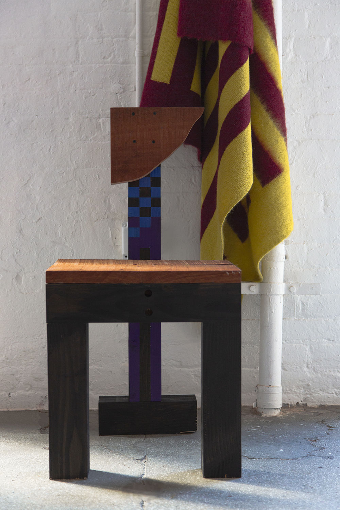

Character’s 101 space collaborated with designer, Henry Zankov, to launch the latest collection for his knitwear brand, ZANKOV. Held during New York Fashion Week, the 101 space was transformed into a striking gallery installation, showcasing the new collection – both knitwear and home, alongside works from furniture designer Brendan Timmins and architects Gabriel Feld and Samuele Brianza.
Character collaborated with Henry to create the space, while also designing a unique print and digital invitation for the event, companion social assets and vibrant kinetic projections that reflected the diverse colors and geometric patterns found in the collection.
Zankov executes genderless, bold and graphic knitwear in luxurious fibres. The emphasis is on colour, shape and pattern, and Zankov uses specialist techniques to create unique yarns, such as brushed air-spun alpaca, high-twist viscose and compact merino wool. The core of the brand is Zankov’s love of colour, art, architecture and sport.
The Guardian
Knitwear specialist Henry Zankov has been designing sweaters for many of the industry’s big names for years. Now, he’s branching out under his own name. ‘Each piece is made to last and cherish,’ says the designer. Mixing technical know-how with an intuitive feel-good factor, Zankov showed a wardrobe of crewneck sweaters, sporty knit hoodies, ‘jumpergans’, oversized blankets and even a pair of mohair basketball shorts. Checkerboard and stripes are established a brand motif. Using specialty yarns such as high twist viscose crepe and super soft brushed alpaca-blend mohair - so light its ‘air-spun’ - Zankov creates sculptural pieces that are extremely light.
New York Fashion Week A/W 2020 Editor’s Picks,
Wallpaper Magazine
